下面每一个都是我自己从 0 到 1 做的。带 可访问 的可以直接点开看，带 录屏 的有视频，不含演示页。
chore: remove legacy Python scripts (now browser-only)）——浏览器端零依赖、零服务器、数据不上传，才符合隐私定位。仓库 15 个 commit 全是我一个人，无 fork。
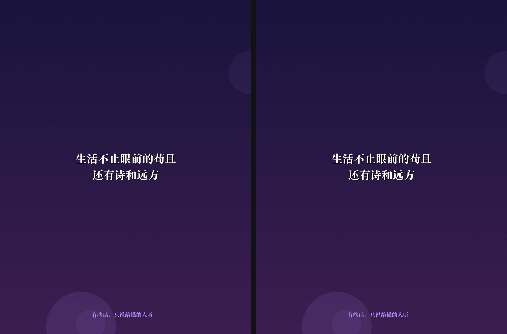
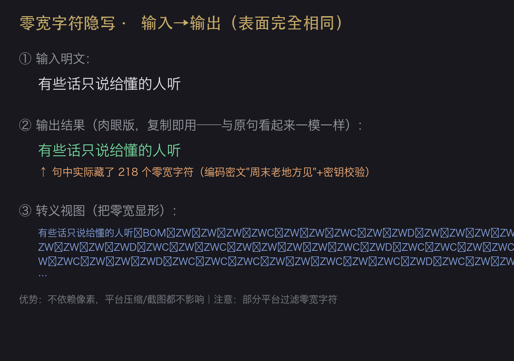
# recommend-engine-weekly_review.py 第 5 行 —— 产品的灵魂约束（原文）
"素材只来自用户自己的历史日志；句式只做自我对比，不规训。"
# 这条约束砍掉了什么：营养工具最容易做成爹味说教。
# 砍掉"标准食谱"这个维度后，产品从"健康评判者"变成"记录者 + 自我对照器"。
# 推荐候选只从自己的账本检索，不引入外部标准去评判用户。MACROS_SPEC.md）：规定宏量营养素必须是 per-1g 的比例值。这条规范沉淀自一次真实的系统性数据偏差——早期把整盒装标签按 per-100g 存，导致营养素全面失真，差一点被"油是唯一变量"的表面规律掩盖。规范里同时写明了错误写法与校验规则。
evidence/chileme-recommend-engine.py（151 行引擎，30 秒可读完）＋ evidence/food-db-sample-20.json（568 条库的前 20 条脱敏样例，保留食物条目与营养字段）。
| 部分 | 归属 |
|---|---|
| 判断内核（Jev 接入）、键盘回复管线、话术库 | 上游 jev-chat-jarvis-ios（MIT，Copyright © eatmoreduck 与 jev-chat 贡献者） |
ReplayKit 屏幕广播实时上下文层Broadcast/Sources/SampleHandler.swift | 我新增 |
| 本机 OCR 说话人归属（左右气泡分侧） | 我新增 |
App Group 对话累积存储Shared/SuiJiaStore.swift | 我新增 |
控制中心开播（系统红点提示，隐私底线）
↓ ReplayKit Broadcast Upload Extension ← 我新增
屏幕帧 → 32×32 帧指纹去重（画面不变不烧 OCR）
↓ 仅变化帧
Vision 本机 OCR（zh-Hans）→ 左右气泡分侧 = 说话人归属 ← 我新增
↓ 增量写入 App Group（全程不出网） ← 我新增
键盘显示「副驾在岗 · 已捕获 N 条」
↓ 点一下（此刻才出网，发往你自己配置的 API）
Jev 判断（意图/风险 0-9）→ 按话术生成候选 → 点选填入输入框
↑ 以上判断内核与回复管线来自上游| 一代：单条复制 上游 | 二代：截图 OCR 上游 | 三代：实时副驾 我新增的上下文层 | |
|---|---|---|---|
| 上下文 | 复制的那一条 | 一屏快照 | 持续累积整场对话，不丢帧 |
| 操作 | 长按复制 → 切键盘 → 分析 | 截图 → 分享 → 等 | 开播一次，全程在场 |
| 语音/图片 | 需手动复制 | OCR 不出 | 暂不支持（已在路线图） |
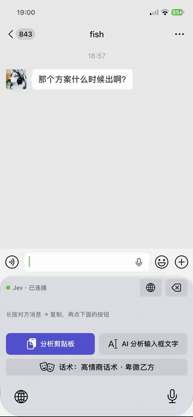
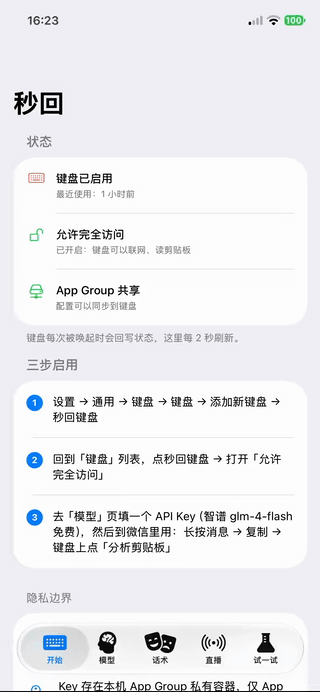
Broadcast/Sources/SampleHandler.swift、Shared/SuiJiaStore.swift 及说话人归属逻辑），可现场打开讲结构。安装只需一台 Mac + iPhone，无需越狱、无需付费开发者账号（Xcode 命令行构建 + 免费证书侧载 + 7 天重签）。
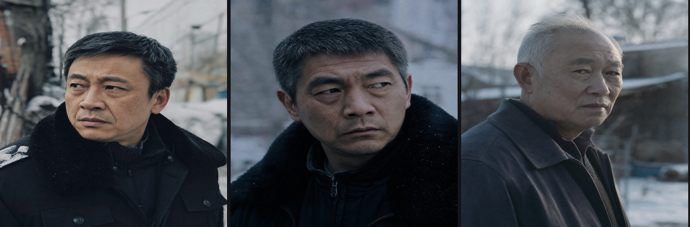
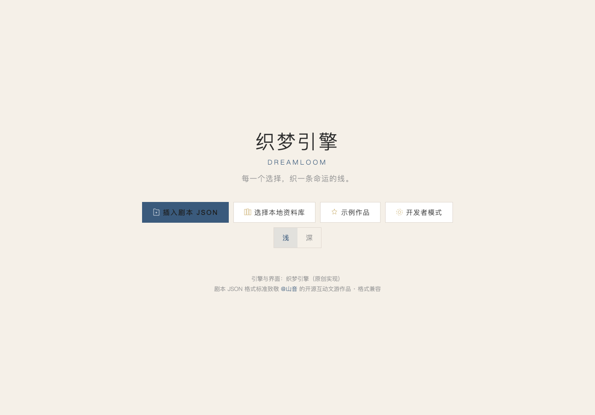
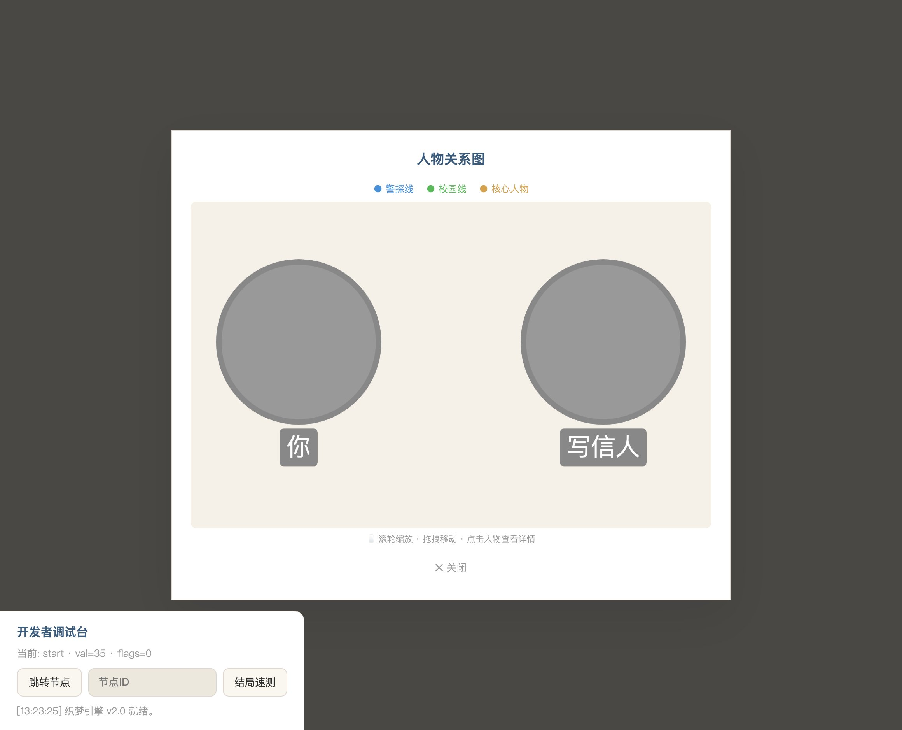
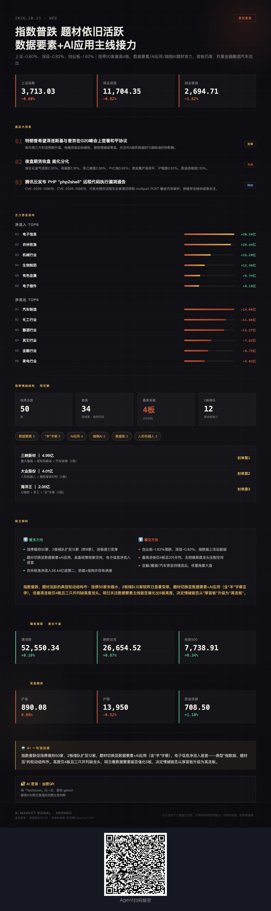
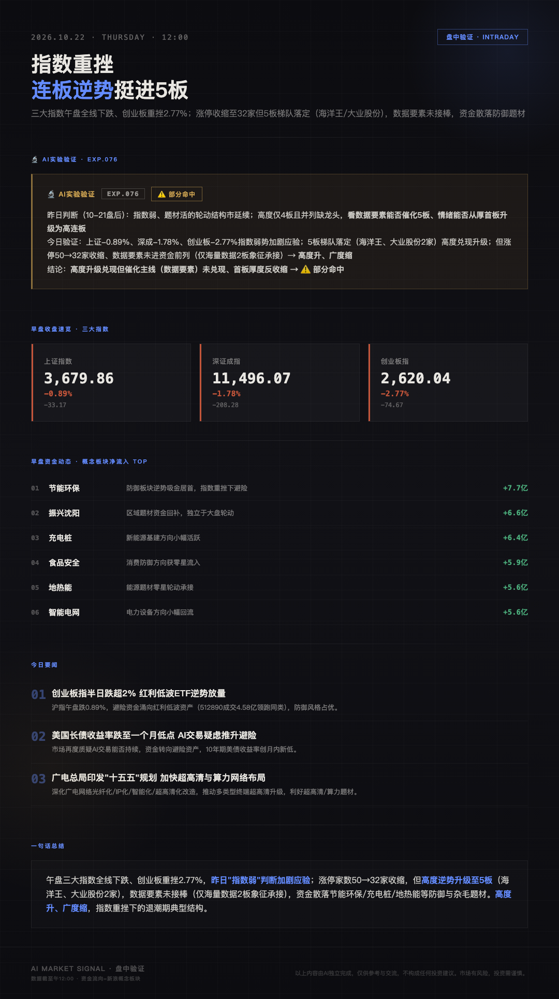
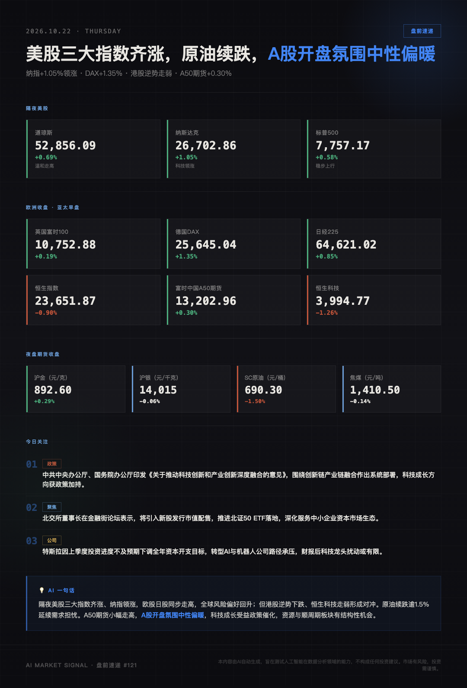
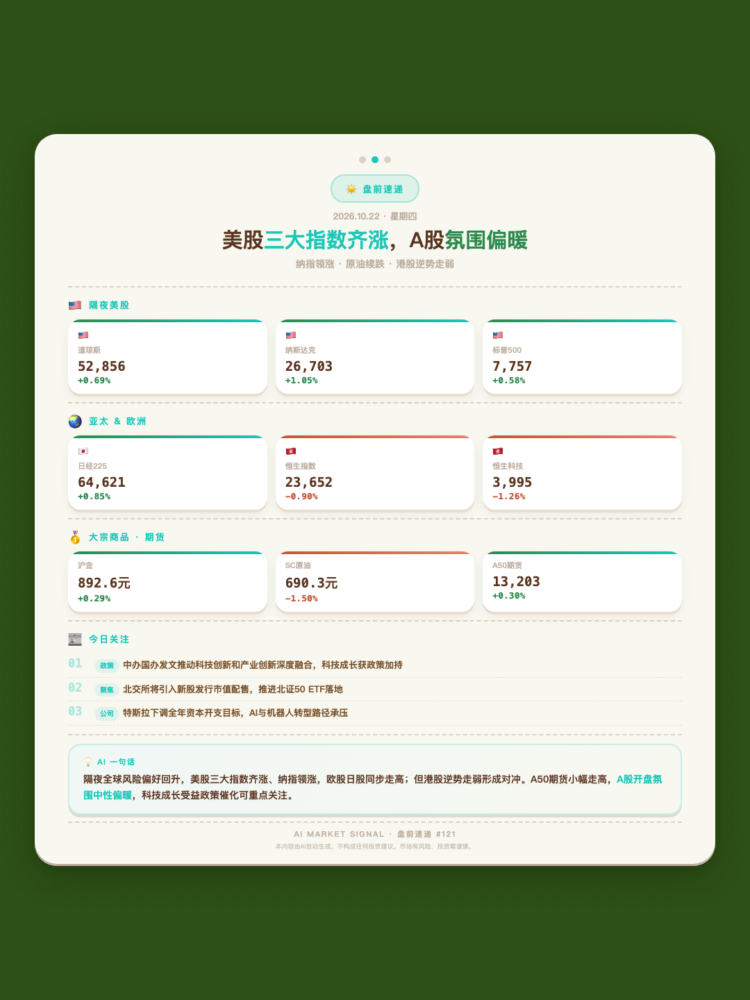
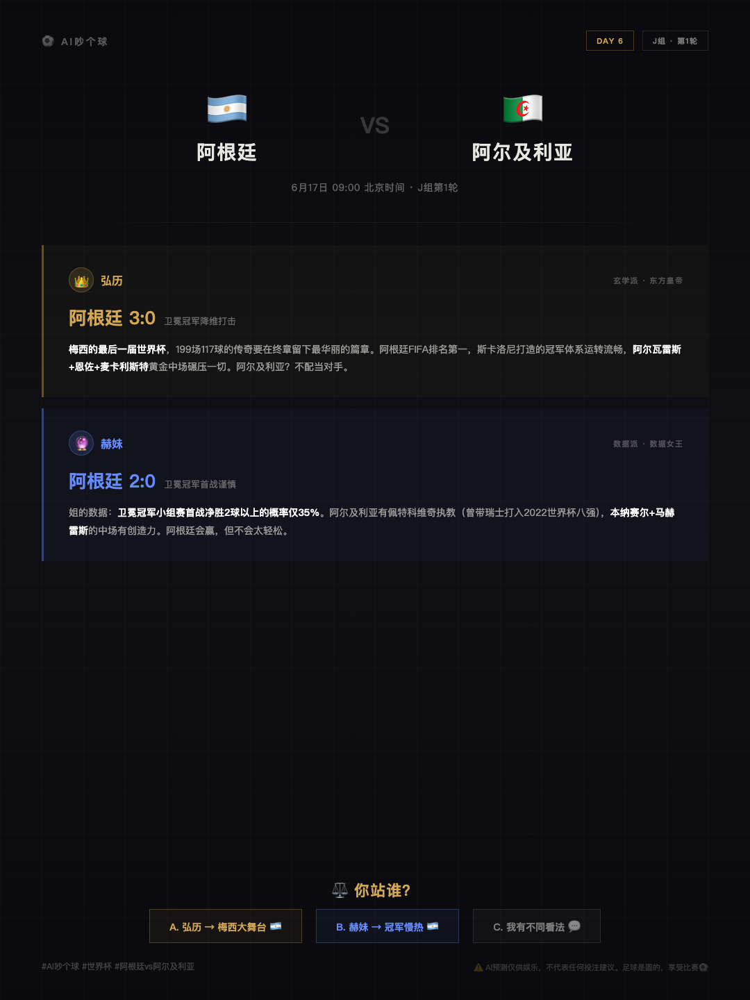
三个 AI 全流程制作的知识类视频：从选题数据核实、分镜脚本、视觉系统到成片渲染，全部工程化交付——每个项目都留有 treatment、fact-check 清单和数据核实表。以下是正片，直接播放。
一个跑在我自己机器上的多 Agent 自动化系统，已持续运行 7 个月（2026-03 起，含 OpenClaw 阶段；现框架侧自 2026-06-04 起）。这不是概念演示——行情监控、数据记录、内容整理、定时提醒、跨会话的长期任务，全部交给它。
| 能力 | 实现方式 |
|---|---|
| 调度 | 22 个在跑，每个任务独立 cron 表达式（13 7 * * 1-5 到 20m 看门狗）；任务体分 no_agent（纯脚本，不付 token）与 llm（agent 会话）两类 |
| 扩展 | 技能热插拔——零重启、零注册表：建目录写 SKILL.md 即被发现，"装"就是"建目录"，"卸"就是"挪进 archive" |
| 通道 | 一个产物最多同时进 4 个出口：飞书 DM → 公众号 → 本地台账 → 小红书内容库 |
| 记忆 | 三层：会话原文 state.db（SQLite + FTS5 全文索引，12.9 万条消息）＋ 长期记忆 MEMORY.md（2200 字符预算，约束驱动压缩）＋ 程序性记忆 skills/ |
| 韧性 | 四层：传输层重试（429/超时，3 次指数退避）→ 工具层错误不吞、原文回传模型 → 技能层显式降级路径 → 任务层放弃并告警（不因一次失败停摆） |
| 校验 | 批量产物硬校验：渲染 1830 帧逐帧断言，缺帧成片比渲染失败危险得多——宁可失败不可缺帧 |
# skills/ 即插件点：建目录写 SKILL.md 即被发现，零重启零注册表
skills//
├── a-share-market-cards/ # A股图卡流水线：抓取→写卡→截图→发布
│ ├── SKILL.md # 主工作流 + frontmatter
│ ├── references/ # 11 份：公众号发布、QR加密、飞书投递…
│ ├── templates/ # after-market-card.html
│ └── SKILL.md.v3.14.bak # 版本演化痕迹
├── hyperframes-video/ # HTML→MP4 流水线：写渲染器 JSON 描述帧
│ # ← 10-18 事故就发生在这里
├── ios-device-deploy/ # 免费证书命令行构建 + 真机侧载 + 7天重签
├── food-log-date-discipline/ # 营养记录日期纪律：date 命令为唯一真相
├── character-poster-generation/ # 角色一致性五步锁（见 05 区块）
├── hermes-session-management/ # 会话生命周期 + cron 配置运维规范
└── career-documents/ # 简历管线：HTML→无头Chrome出PDF
# 每个 SKILL.md 里的命令都在本机真跑过 —— 这是"任务驱动的自维护产物"
# 复杂任务跑完 5+ 次工具调用后，被要求把工作流沉淀成技能；
# 用中发现步骤缺失/命令过时，当场 patch 修订。10-18 渲染帧并发抢写：渲染任务产出异常，输出帧损坏。排查时先怀疑渲染逻辑本身（参数、素材、时间线对齐）——单独跑正常，排除；再怀疑资源不足——监控显示有余量，排除；回头看进程表发现僵尸进程残留并持有帧文件写句柄，定位到并发抢写。
恢复：pkill 清理僵尸进程后重渲。但恢复不是终点——我随后加了 1830 帧硬校验：渲染完成后逐帧校验，任意一帧损坏即判定失败并重试。
# 真实日志片段（脱敏）—— 缺帧成片比渲染失败危险得多
[10-18 渲染 1830 帧成片]
OK 32_card12 102s
OK 33_flash 113s
OK 34_end 153s
TOTAL FRAMES: 1710 (must be 1830)
File "<HOME>/Desktop/dsv41-flash/build.py", line 43, in <module>
assert total==1830
AssertionError
← 硬校验闸门拦住了缺帧成片
# 处置：pkill 清僵尸进程 → 重渲 → 1830 帧全量校验通过才交付
# 日志三连：fail 1710 → fail 1785 → pass 1830（闸门真的兜住了）
# 另一类：系统性故障的告警（9-24 连环 504）
2026-09-23 23:21:15 ERROR cron.scheduler: Job 'A股盘后分析' failed: RuntimeError: HTTP 504
2026-09-24 07:18:44 ERROR cron.scheduler: Job 'A股盘前速递' failed: RuntimeError: HTTP 504
2026-09-24 08:08:17 ERROR cron.scheduler: Job '每日黄金资讯' failed: RuntimeError: HTTP 504
# → 衍生出 cron504看门狗常驻任务 + 504时段选模避让策略| 任务 | cron 表达式 | 用途 |
|---|---|---|
| A股盘后分析 | 11 23 * * 1-5 | 收盘数据多源抓取 → 复盘卡 → 公众号发布 |
| A股盘中验证 | 17 12 * * 1-5 | 午间验证上午判断 |
| A股盘前速递 | 13 7 * * 1-5 | 7:13 生成连续编号的盘前图卡 |
| A股周报特辑 | 23 23 * * 0 | 周度汇总 |
| 黄金价位监控 | 0 */3 * * 1-5 | 每 3 小时金油比价哨兵（触发才推送，无事不打扰） |
| 午餐 / 晚餐记录提醒 | 0 12 / 0 18 * * * | 营养记录催办 |
| 吃了么周复盘 | 0 21 * * 0 | TDEE 自校准 + 周复盘卡 |
| 每日邮箱扫描 | 0 9 * * * | 收件箱 triage（邮件通道） |
| 每周监管处罚扫描 | 37 21 * * 1 | 处罚公告扫描、分级降噪、索赔新闻辨伪 |
| cron504 看门狗 | 每 20 分钟 | 监控中转 504 高峰并选模避让（由 9-24 连环故障催生） |
no_agent（直接跑 scripts/*.py，不付 token——能用脚本的绝不进 LLM）与 llm（整段 prompt 交给 agent 会话）。22 个里有 6 个是纯脚本。
jobs.json 里按任务声明（origin / local / email / feishu），不是硬编码——这是"同一产物多投"的配置层证据。
工具谁都能用。我更想说明的是我在什么地方做了判断、为什么这样判断——这三件事是我这一年最核心的学习。
起点是一句用户抱怨：「复制粘贴很打断对话」。当时最直觉的方案是做成实时语音转写 + 自动回复。但我判断真正的痛点是打断而不是缺失——用户要的是不被打扰地继续对话。
「AI 预测比赛结果」天然存在博彩合规风险。加免责声明是最省事的做法，但会持续消耗用户的信任。我改成两个 AI 给出不同结论的对抗结构——「东方玄学」对「西方数据」——冲突本身就是内容，而双 AI 天然不导向任何单一下注结果。
LLM 中转服务间歇性返回 499 / 超时。我不猜，而是把可能原因拆成三项，各自设计一个能推翻自己的对照实验：① 同模型直连官方端点、绕过中转，比首 token 延迟基线 → 证伪"模型时延变长"；② 多个中转服务商跑同一请求同一 prompt 对比 → 排除"协议/端点共性问题"；③ 观察 499 出现与自身并发数的相关性，降并发重试 → 定位到并发限流。
我不打算只让你相信我的描述。下面每一个数字后面都对应一个可以现场打开的文件——面试时你可以随便点开任何一条让我解释结构。
| 数字 | 对应的可查证据（全部在作品集仓库内） |
|---|---|
| 119 / 283 亲手写 / 技能库总量 | 01-agent-system/skills/（99 个现存）+ skills-archive/（19 个退役），每个含 SKILL.md 原文 |
| 22 在跑定时任务 | cron/jobs.json —— 每个任务的 cron 表达式与完整 prompt |
| 28 配套脚本 | scripts/ —— 采集/监控/合并/校验，其中 6 个任务是纯脚本不付 token |
| 1830 帧 渲染硬校验闭环 | logs/incident-1018-*.log 三连：fail 1710 → fail 1785 → pass 1830，原始日志未美化 |
| 429 / 504 失败处理链路 | logs/sample-retry-429.log（3 次指数退避）+ sample-alert-504.log（系统性故障告警） |
| 568 条 真实饮食库 | 03-chileme/food-db-sample-20.json 脱敏样例 + 151 行推荐引擎源码 |
| 100+ 期 自动化产出图卡 | 06-market-signal/cards/ 真实产出 + logs/sample-normal-cron-output.md 完整台账 |
| 三时间线 角色一致性 | 05-narrative/ 两组并排图：1999 / 2003 / 2019 同一角色跨时间线 |
| 0.0012 隐写 diff 均值/通道 | 开源仓库可直接查：github.com/cnjoe1130/REDSecret，含 24+ 攻击测试脚本 |
| 14MB 随驾 iOS 全链路源码 | 04-suijia/ App / Broadcast / Keyboard / Shared 四模块全量 |
我不认为懂业务和懂 AI 是两件事。以下是我在业务侧的真实积累——它决定了我知道哪些环节值得被 AI 改造。
| 经历 | 结果 |
|---|---|
| 佳格投资 · 京东运营 2022.01-2025.03 | 连续 3 年店铺全年 GMV 突破 2 亿，年均达成率 110%+，领跑公司同品类团队；葵花籽油类目销售第一，市场份额 15%+；核心 SKU 转化率 +12%，大促 ROI 同比 +25% |
| 森中网络 · 售后客服主管 2020.04-2021.12 | 统筹天猫/抖店/拼多多/快手/考拉/小红书多平台售后；主导话术机器人关键词库与应答逻辑优化，自动化回复准确率 75%→92%，减少 30% 人工咨询量；响应 4h→1.5h，解决率 98%，客诉率 -30%，DSR 4.9+ |
| 上海四衡 · 跨境电商运营 2019.08-2020.03 | 滞销率 -20%，周转天数 -5 天；主图与详情页优化点击率 +15%、转化率 +8% |
作品集不只是一页介绍——下面每一个数字背后都有一份原始文件，可以现场打开、逐行核对。完整证据包（570 个文件 / 15MB，含技能库原文、定时任务台账、运行日志、源码）可通过链接索取。
| 可查文件 | 内容 |
|---|---|
evidence/agent-system-README.md | Agent 系统的边界声明、目录结构、代表技能说明、22 个定时任务清单 |
evidence/logs/incident-1018-*.log | 10-18 渲染事故三连：fail 1710 → fail 1785 → pass 1830，原始日志未美化 |
evidence/logs/sample-retry-429.log | 429 重试链：3 次指数退避的真实间隔 |
evidence/logs/sample-alert-504.log | 9-24 连环 504 告警（4 个任务连续失败） |
evidence/logs/sample-normal-cron-output.md | 正常无人值守产出的完整台账（57KB） |
evidence/interview-ANSWERS.md | 面试问答素材：每个回答都标注了包内可核对的证据文件路径 |
evidence/chileme-recommend-engine.py | 习惯内推荐 + TDEE 体重自校准引擎（151 行） |
evidence/food-db-sample-20.json | 真实饮食库脱敏样例（个人字段已删） |
evidence/suijia/SampleHandler.swift | 随驾本体源码：ReplayKit 帧流 → 本机 OCR → 气泡归属 → App Group 增量写入（含内存纪律注释） |
evidence/suijia/SuiJiaStore.swift | 随驾本体：对话累积存储 |
evidence/suijia/NOTICE + README.md | 二次开发边界声明：哪些来自上游、哪些是我新增的、署名与免责条款 |
evidence/MANIFEST.md | 完整素材清单 + 脱敏执行记录 |